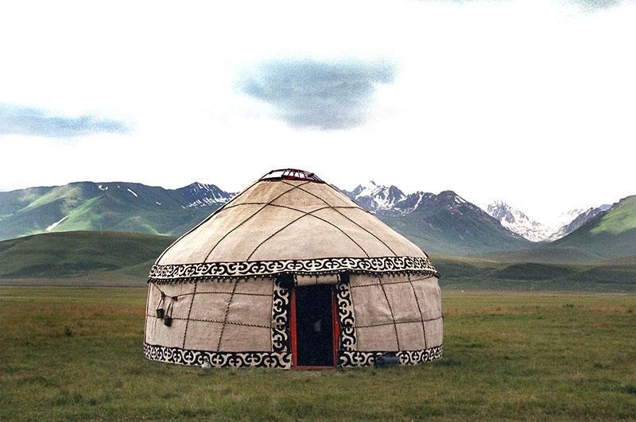

🎎Бурятская культура
Культура Бурятии представляет собой соединение культур народов Азии и Европы, формирование которой шло параллельно с развитием устоев общественной жизни в Забайкалье. Свой вклад в эту культуру внесли многие племена и народы, на протяжении тысячелетий сменявшие друг друга на этой территории.
Духовная культура Бурятии
Мораль:
- Бурятская мораль строилась на Уважение к старшим.
- Семья и род. Семья — центральная ценность. Детей с малых лет учили заботиться о родителях, уважать старших.
- Коллективизм. Выживание и успех зависели от взаимопомощи(«тухаламжа»)
- Сострадание и милосердие. Детей учили помогать : ухаживать за больными, стариками, маленькими.
- Бережное отношение к природе.Следить и ухавижать за природой
- Трудолюбие. Приобщение к труду с ранних лет считалось важным воспитательным приёмом.
- Скромность и сдержанность. В пословицах и поговорках часто встречается мысль: «Получив добро — помни, сделав добро — забудь».
Наука:
- Знания у бурят можно сказать были и есть как во всем осталь ином мире
Искусство:
- Изобразительное и декоративно-прикладное искусство.Буддийская живопись (тханка),Стиль «Буряад зураг», буряад дэгэл (бурятский халат),юрта
- Игры:«Хара морин» («Чёрная лошадка»),«Абагша» («Охотники и утки»),«Табун» («Хурэг адуун»)
- Музыкальное искусство: В основе народной музыки лежит ангемитонная пентатоника (лад из пяти звуков). Среди жанров — эпические сказания улигеры
- Литература.Бурятская литература тоже опирается на фольклор — эпосы («Гэсэр»), сказки, мифы.
Религия:
- Шаманизм.Это традиционная религия бурят. В её основе лежит вера в то, что природа и её силы (вода, огонь, воздух) одухотворены, а у каждого объекта — горы, реки, дерева — есть свой дух-покровитель. Верховным божеством считалось Вечное Синее Небо (Хухэ Мунхэ Тэнгри).
- Буддизм.Проник в Бурятию в конце XVI века из Монголии, а к XVII веку получил распространение. В 1741 году императрица Елизавета Петровна издала указ, признавший ламаизм одной из официальных религий России.
Образование:
- Не говоря о обычном обучении, буряты учат детей всем ценностям (сказаным ранее)
Материальная культура Бурятии
О ней мало что можносказать ведь народ развивался вместе со всем миром, но можно выделит несколько вещей:
- Юрта
- буряад дэгэл
- Бурятская мораль строилась на Уважение к старшим.
- Семья и род. Семья — центральная ценность. Детей с малых лет учили заботиться о родителях, уважать старших.
- Коллективизм. Выживание и успех зависели от взаимопомощи(«тухаламжа»)
- Сострадание и милосердие. Детей учили помогать : ухаживать за больными, стариками, маленькими.
- Бережное отношение к природе.Следить и ухавижать за природой
- Трудолюбие. Приобщение к труду с ранних лет считалось важным воспитательным приёмом.
- Скромность и сдержанность. В пословицах и поговорках часто встречается мысль: «Получив добро — помни, сделав добро — забудь».
- Знания у бурят можно сказать были и есть как во всем осталь ином мире
- Изобразительное и декоративно-прикладное искусство.Буддийская живопись (тханка),Стиль «Буряад зураг», буряад дэгэл (бурятский халат),юрта
- Игры:«Хара морин» («Чёрная лошадка»),«Абагша» («Охотники и утки»),«Табун» («Хурэг адуун»)
- Музыкальное искусство: В основе народной музыки лежит ангемитонная пентатоника (лад из пяти звуков). Среди жанров — эпические сказания улигеры
- Литература.Бурятская литература тоже опирается на фольклор — эпосы («Гэсэр»), сказки, мифы.
- Шаманизм.Это традиционная религия бурят. В её основе лежит вера в то, что природа и её силы (вода, огонь, воздух) одухотворены, а у каждого объекта — горы, реки, дерева — есть свой дух-покровитель. Верховным божеством считалось Вечное Синее Небо (Хухэ Мунхэ Тэнгри).
- Буддизм.Проник в Бурятию в конце XVI века из Монголии, а к XVII веку получил распространение. В 1741 году императрица Елизавета Петровна издала указ, признавший ламаизм одной из официальных религий России.
- Не говоря о обычном обучении, буряты учат детей всем ценностям (сказаным ранее)
Мораль:
Наука:
Искусство:
Религия:
Образование:
- Юрта
- буряад дэгэл
